Materials
Materials
This article is a clone from the original GoodEarth Connect catalog. View the original post at:
Boundless Expressions- Chapter 2 Doors and Windows ↗
Boundless Expressions
Series 1 – Carpentry
Boundless Expressions
Series 1 – Carpentry
Introduction
The title of “Master Craftsman” in India was that of a carpenter in many traditional societies owing to the highly specialised craft’s requirement of rigour and skill. Specifically in Kerala, ‘Tachu-shastra’ or the science of carpentry, was deeply valued. The spaces, proportions, and details were designed in response to the property of the timber used. Even today, the ancient temples and Nalukettu houses are a testament to the skilful choices in the selection of the wood, its accurate joinery, and an artful array of delicate carvings.
However, the advent of the industrial revolution and the misinterpretation of architecture in building something modern and unique led to the steady decline of the limitless usage of this living material.
Utilising this vernacular knowledge built upon the know-how of previous generations that is rampantly dying and metamorphosing into the architecture of the present, we take a look at a few of the crucial timber elements crystallised at Good Earth and how this sustainable material adds value to the design narrative.
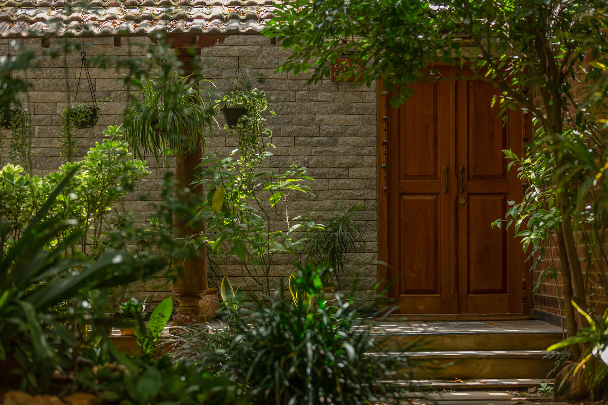
Chapter 2 – Doors and Windows
Since time immemorial, wood has been the most popular material for doors and windows in construction. This versatile and highly durable natural resource enhances the aesthetic appeal, brings in warmth, and enhances the thermal efficiency of the enclosed space.
Moreover, wood is the only renewable building material. When sourced ethically, this living material can be grown, harvested, and recycled multiple times.
Therefore, the wooden charm is still a sought-after entity amidst the innumerable options available in the industry. This very demand, however, has resulted in high-quality wood becoming a luxury in construction today due to its unprecedented price.
Yet, a stroll in GoodEarth Malhar Eco-village reveals the umpteen doors and windows that stud the residences and compound keeping it authentic and enhancing the overall natural appeal.
Thus, in this blog, we explore the various doors and windows and examine how GoodEarth maximizes its usage by sourcing the materials and maintaining them.
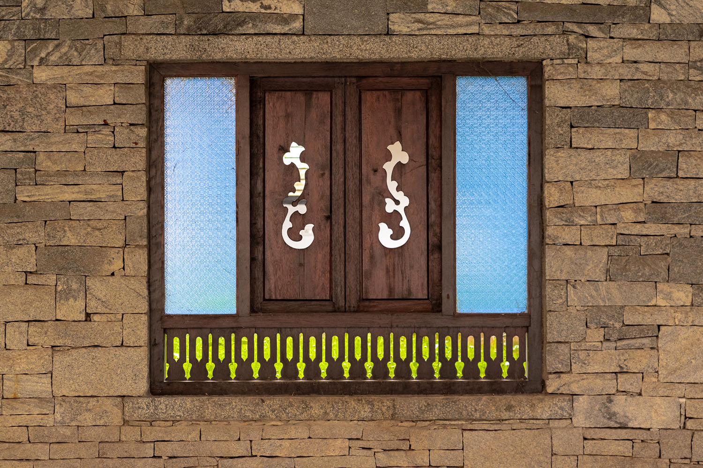
Teak for main doors
Teak wood is one of the most popular and sustainable materials for building main doors. It is more durable than other hardwood and has a natural ability to resist rot and pests, which makes it an ideal choice for tropical climates. Hence, it has been used for centuries as the main door material. But with incessant deforestation and an increase in demand, there is a dearth of high-quality teak in recent years.
Utilising the rich heritage of our nation to its advantage, GoodEarth procures its teak wood primarily from dilapidated mansions in Karaikudi, Tamil Nadu, where high-quality wood of at least two hundred years is available for restoration.
Elaborating on the quality assessment during sourcing the wood, Biju P, the Project Director and Head of Carpentry at Good Earth explains, “The main criteria during quality check is to evaluate the age of the wood, which is approximately obtained by analysing the centre and the concentric rings around it. Post that, we chip a piece to examine its texture and grains. The fibre of the log can disclose whether it was sliced from the main trunk or its branches. Other prominent factors are the oil retention and the knots formed in the log. Discerning these is the job of an experienced craftsman, and only after we determine the quality do we source it for our workshop.”
Main doors need to be sturdy, welcoming, and durable. It is the high oil content in Teak that makes it particularly weather and insect resistant. Furthermore, the golden hue of Teak when carved, moulded, and customized gives an undeniable regal aesthetic that is incomparable to other hardwood.
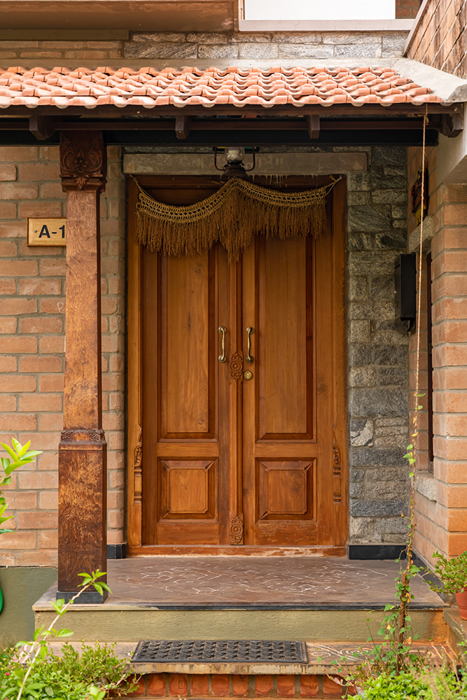
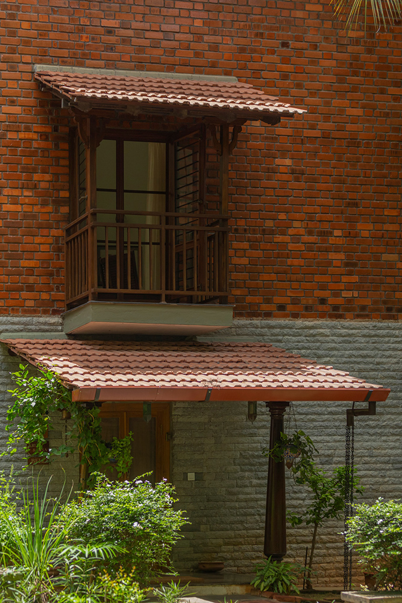
How to care
When repurposing wood, the main concern is to replenish its lost oil content. A cover of polyurethane (PU) sealant and a polish strengthens the teak wood and replenishes the original oil content providing adequate protection against weathering and renewing its authentic shine as well. Although this specific polish may come with a fairly steep price, it has to be noted that when done correctly, a re-polish is often needed only after a decade.
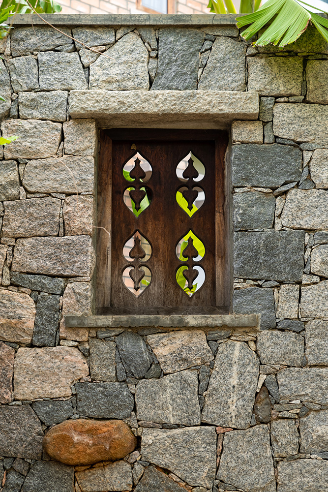
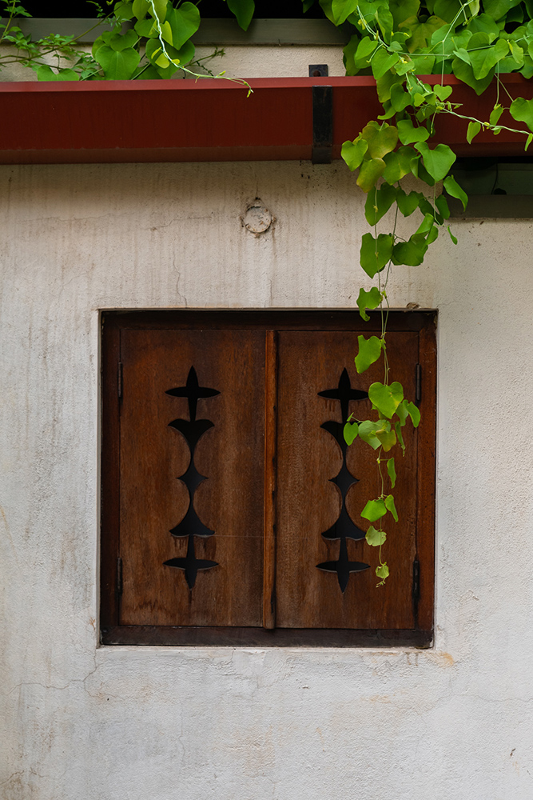
Other Doors, Window Frames & Shutters
Apart from the main door, all the other doors and window shutters including the frames are made from Honne (or Merbau) wood. As a much more affordable variant compared to teak, this wood is well suited to Bangalore’s climate and has a high oil content that makes it resistant to termites, insect infestation, and rot. Thus, this high-density hardwood can withstand the test of time.
The windows of GoodEarth have a distinct character. They are carved, moulded, and thawed into various shapes and sizes. Some are fixed, some can be opened, and some just act as a hiatus to the formidable compound walls accentuating the beauty with inlays, stencils, or joinery details that are hard to miss.
The window frames and shutters exhibit diverse design patterns, textures, and colours accentuating the walls they adorn.
“Honne doesn’t bend much and is excellent to work with. It can be customized easily according to the requirements of the design and usage. The material is extensively used in our projects and we have been able to utilize its strengths to our creative advantages,” says Biju.
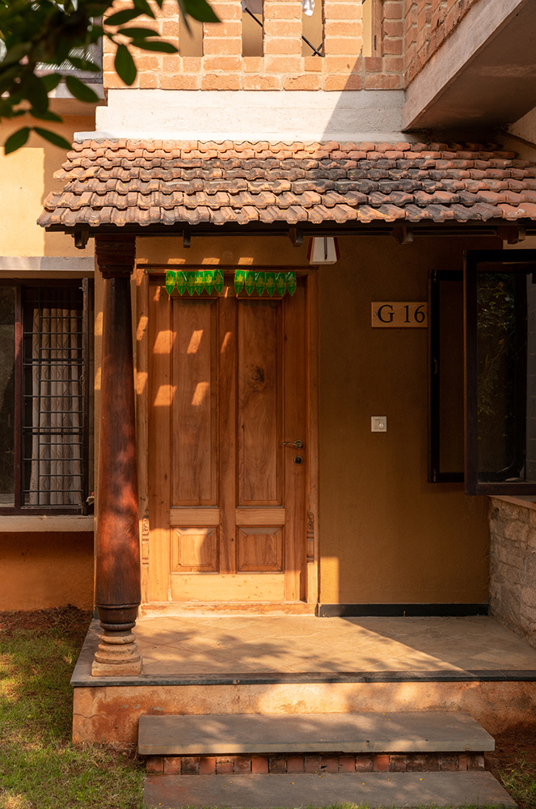
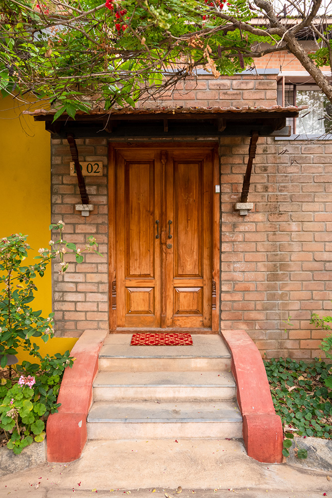
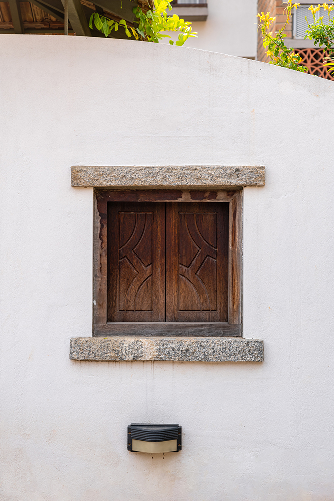
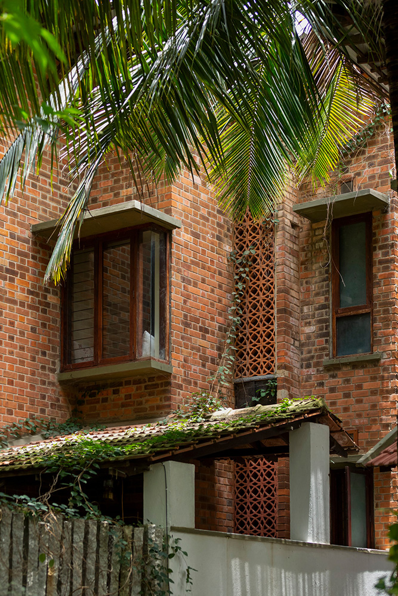
Maintenance
As the kitchen doors, utility doors, French windows, and regular window shutters are used regularly, Sleek oil polish is used as a maintenance coat every five years instead of cashew oil which can burn the skin.
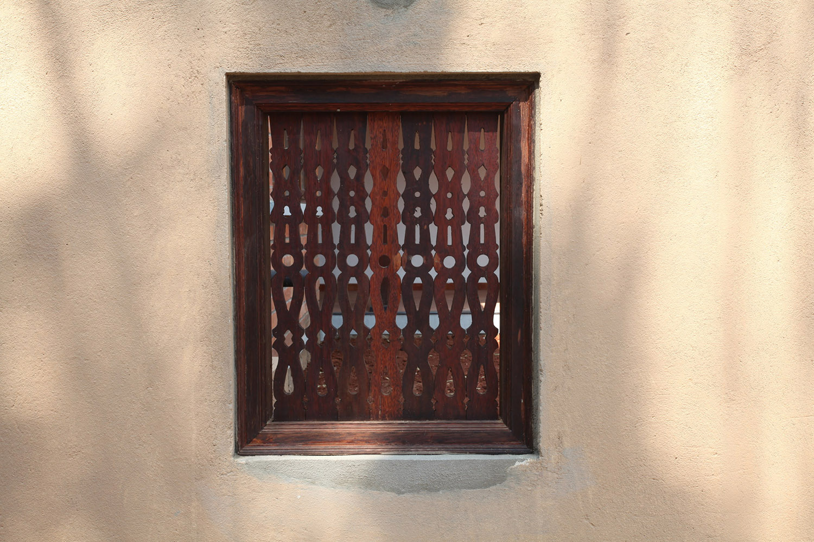